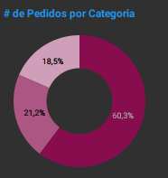

Project: Order Dashboard - Sales and Logistics Analysis
Introduction
This project presents an Order Analysis Dashboard, developed in Looker Studio. The main objective is to provide a comprehensive and detailed view of order volume, customer base, geographical sales distribution, and consumption trends over time. This dashboard aims to monitor sales performance, identify promising markets, optimize the supply chain, and enhance the customer experience through the analysis of dispatch types and locations.
Project Structure
The dashboard is organized to offer different perspectives on order data:
- Order and Customer Overview: Key indicators regarding the total number of customers, orders, states served, and market segments.
- Order Distribution by Segment: Analysis of the participation of different customer segments in the total order volume.
- Order Distribution by Product Category: Ranking of the best-selling product categories.
- Performance by City: Identification of cities with the highest order volume.
- Temporal Order Trends: Line charts showing the evolution of orders over months and years.
- Dispatch Type Analysis: Distribution of orders by different delivery methods.
- Detailed Order Data: A table with granular information about each order, including Order ID, date, dispatch type, quantity, state, region, and customer ID.
Technologies Used
For the construction of this dashboard, the tool employed was:
- Looker Studio: Used to connect the data source, perform the necessary transformations and modeling, and build the interactive visuals that compose the dashboard, with the design and layout being developed directly within the Looker Studio environment.
ETL Process (Extract, Transform, and Load)
The ETL process for the Order Dashboard in Looker Studio was executed to ensure data quality and readiness for analysis:
- Extraction: Raw data was extracted from a tabular source in
.csv, containing detailed information about each transaction, customer, product, location, and shipping method. - Transformation: Within the Looker Studio environment, the necessary transformations were performed to prepare the data for visualization. This included:
- Data treatment, such as standardizing fields and correcting values.
- Creation of calculated fields for metrics such as the number of orders and customers.
- Data modeling was configured to establish appropriate relationships between dimensions (such as region, segment, category) and metrics (such as number of orders and customers).
- Loading: After connection and transformations, the data was loaded into the Looker Studio data model, making it ready to be explored through the creation of interactive charts, tables, and maps.
Dashboard
The dashboard features a clear and concise layout, with an organization that facilitates understanding the most important order and customer metrics. The interface combines KPI cards for a quick overview of totals, donut and bar charts for percentage distributions and rankings, and line charts for temporal trends. Interactivity is a central feature, allowing filtering by different dimensions (region, segment, category, city), which facilitates detailed investigation of any aspect of sales and logistics data.

Insights
The analysis of the data presented in the dashboard revealed valuable insights into order management and purchasing behavior:
- Business Volume Overview:
- The dashboard shows a large-scale operation, with a Total Customers of 793.
- Order volume reached 10 thousand.
- Geographical coverage is significant, with service in 49 States.
- Orders are distributed across 3 Market Segments.

- Orders by Segment:
- The Consumer segment dominates order volume, representing 51.9% of the total.
- Home Office and Corporate contribute 17.2% and 30.2%, respectively.
- The strong concentration in the Consumer segment indicates the strategic importance of this audience for sales volume.
- Orders by Product Category:
- Office Supplies leads with 60.3% of orders.
- Technology and Furniture follow with 21.2% and 18.5%, respectively.
- This points to the product categories that most drive transaction volume, assisting in inventory management and marketing campaigns.

- Orders by City:
- New York City stands out as the city with the highest order volume.
- Other important cities include Philadelphia, Seattle, Los Angeles, and San Francisco.
- This geographical analysis is crucial for logistics planning and identifying key markets.

- Temporal Order Trends:
- The “Orders - Trend (Month)” and “Orders - Trend (Year)” charts allow visualizing the evolution of order volume over time.
- Annual analysis shows data from 2014 to 2017, revealing growth patterns or seasonality.
- The monthly trend, with peaks and valleys in different months, offers insights for operational and marketing planning throughout the year.

Considerations
From the insights obtained, some important considerations arise:
- Consumer Focus: The dominance of the Consumer segment reinforces the need for marketing and service strategies focused on this audience.
- Inventory and Procurement Optimization: The most popular product categories (Office Supplies, Technology, Furniture) should have their inventories carefully managed to avoid stockouts and maximize sales.
- Logistics Planning and Geographical Expansion: Identifying high-volume order cities and regions is crucial for optimizing delivery routes and evaluating potential for expansion into new locations.
- Delivery Efficiency: Analyzing dispatch types can guide the optimization of delivery services, seeking greater efficiency and cost-effectiveness.
Conclusion
The Dashboard was an effective analytical tool that transformed raw transaction data into actionable intelligence for sales and logistics management. Its main contribution lies in its ability to:
- Provide a clear view of business volume and customer base.
- Identify consumption patterns by segment and product category.
- Analyze temporal trends and the geographical distribution of orders.
- Demonstrate proficiency in using Looker Studio to build robust and intuitive analyses.